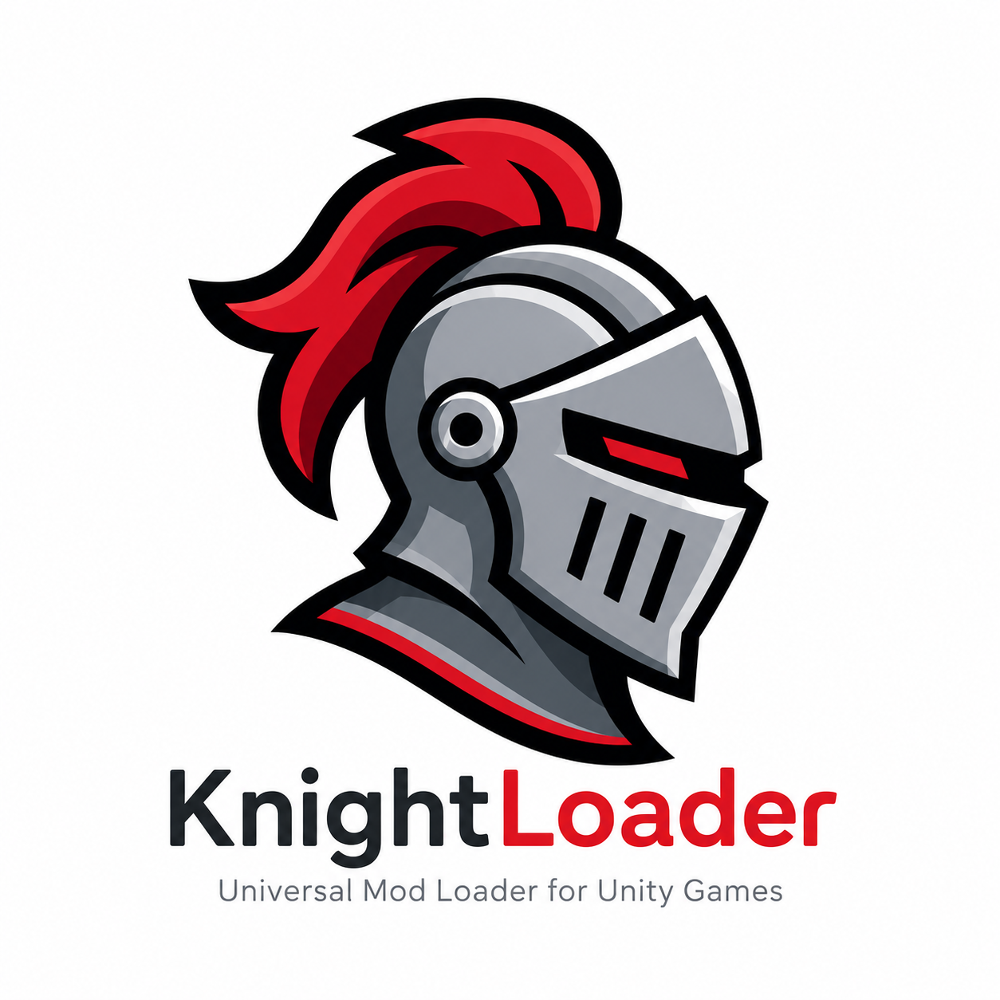

Featherweight injection
A ~14 KB loader boots via UnityDoorstop before the game starts. No overhead once you're in-game.
KnightLoader is a tiny, BepInEx-free foundation for Unity modding — Doorstop injection, Harmony patching, and a drop-in Mods folder. No game files are ever modified on disk.

Why KnightLoader
From install to development, every part of KnightLoader is designed to feel straightforward.
A ~14 KB loader boots via UnityDoorstop before the game starts. No overhead once you're in-game.
The loader core is fully game-agnostic — the same binary works across Unity Mono games. Raft is the first supported target.
Game code is patched in memory only. Uninstalling is deleting four files — your install stays vanilla and update-safe.
Mods are single DLLs in a Mods folder, with Harmony 2 included for runtime patching. Drop it in, launch, done.
For developers
Spend time building the mod — not fighting the loader. Implement one class, get a full Unity lifecycle (OnLoad, OnUpdate, OnGUI, OnUnload) plus a per-mod Harmony instance and logger.
using KnightLoader;
[ModInfo("My First Mod", "1.0.0")]
public class MyFirstMod : Mod
{
public override void OnLoad()
{
Harmony.PatchAll();
LogInfo("Ready to play.");
}
}A modern alternative
Versions
Published straight from GitHub — new versions appear here automatically the moment they're tagged.
Loading releases…
Get started
Grab the latest KnightLoader, drop it next to your game's .exe, and launch.
Download for Windows ↓ Free forever · Windows 10 / 11 · MIT license